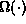
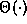
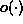
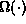
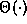
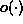

Data Structures and Algorithms
with Object-Oriented Design Patterns in Java
Data Structures and Algorithms
with Object-Oriented Design Patterns in JavaThis book presents material identified in the Computing Curricula 1991 report of the ACM/IEEE-CS Joint Curriculum Task Force[43]. The book specifically addresses the following knowledge units: AL1: Basic Data structures, AL2: Abstract Data Types, AL3: Recursive Algorithms, AL4: Complexity Analysis, AL6: Sorting and Searching, and AL8: Problem-Solving Strategies. The breadth and depth of coverage is typical of what should appear in the second or third year of an undergraduate program in computer science/computer engineering.
In order to analyze a program,
it is necessary to develop a model of the computer.
Chapter  develops several models and illustrates with examples
how these models predict performance.
Both average-case and worst-case analyses of running time are considered.
Recursive algorithms are discussed
and it is shown how to solve a recurrence using repeated substitution.
This chapter also reviews arithmetic and geometric series summations,
Horner's rule and the properties of harmonic numbers.
develops several models and illustrates with examples
how these models predict performance.
Both average-case and worst-case analyses of running time are considered.
Recursive algorithms are discussed
and it is shown how to solve a recurrence using repeated substitution.
This chapter also reviews arithmetic and geometric series summations,
Horner's rule and the properties of harmonic numbers.
Chapter introduces asymptotic (big-oh) notation
and shows by comparing with Chapter
that the results of asymptotic analysis are consistent
with models of higher fidelity.
In addition to  ,
this chapter also covers other asymptotic notations
( ,  and )
and develops the asymptotic properties of polynomials and logarithms.
,
this chapter also covers other asymptotic notations
( ,  and )
and develops the asymptotic properties of polynomials and logarithms.
Chapter introduces the foundational data structures--the array and the linked list.
Virtually all the data structures in the rest of the book
can be implemented using either one of these foundational structures.
This chapter also covers multi-dimensional arrays and matrices.
Chapter deals with abstraction and data types.
It presents the recurring design patterns used throughout the text
as well a unifying framework for the data structures presented
in the subsequent chapters.
In particular, all of the data structures
are viewed as abstract containers.
Chapter discusses stacks, queues and deques.
This chapter presents implementations based on both
foundational data structures (arrays and linked lists).
Applications for stacks and queues and queues are presented.
Chapter covers ordered lists, both sorted and unsorted.
In this chapter, a list is viewed as a searchable container.
Again several applications of lists are presented.
Chapter introduces hashing and the notion of a hash table.
This chapter addresses the design of hashing functions
for the various basic data types as well as for the abstract data types
described in Chapter .
Both scatter tables and hash tables are covered in depth
and analytical performance results are derived.
Chapter introduces trees and describes their many forms.
Both depth-first and breadth-first tree traversals are presented.
Completely generic traversal algorithms based on the use of the visitor
design pattern are presented,
thereby illustrating the power of algorithmic abstraction.
This chapter also shows how trees are used
to represent mathematical expressions
and illustrates the relationships between traversals and
the various expression notations (prefix, infix and postfix).
Chapter addresses trees as searchable containers.
Again, the power of algorithmic abstraction is demonstrated
by showing the relationships between simple algorithms
and balancing algorithms.
This chapter also presents average case performance analyses
and illustrates the solution of recurrences by telescoping.
Chapter presents several priority queue implementations,
including binary heaps, leftist heaps and binomial queues.
In particular this chapter illustrates how a more complicated data structure
(leftist heap) extends an existing one (tree).
Discrete-event simulation is presented as an
application of priority queues.
Chapter covers sets and multisets.
Also covered are partitions and disjoint set algorithms.
The latter topic illustrates again the use of algorithmic abstraction.
Garbage collection is discussed in Chapter .
This is a topic that is not found often in texts of this sort.
However, because the Java language relies on garbage collection,
it is important to understand how it works
and how it affects the running times of programs.
Chapter surveys a number of algorithm design techniques.
Included are brute-force and greedy algorithms,
backtracking algorithms (including branch-and-bound),
divide-and-conquer algorithms and dynamic programming.
An object-oriented approach based on the notion of
an abstract solution space
and an abstract solver unifies much of the discussion.
This chapter also covers briefly random number generators, Monte Carlo methods,
and simulated annealing.
Chapter covers the major sorting algorithms
in an object-oriented style based on the notion of
an abstract sorter.
Using the abstract sorter illustrates the relationships between
the various classes of sorting algorithm
and demonstrates the use of algorithmic abstractions.
Finally, Chapter presents an overview of graphs and graph algorithms.
Both depth-first and breadth-first graph traversals are presented.
Topological sort is viewed as yet another special kind of traversal.
Generic traversal algorithms based on the visitor
design pattern are presented,
once more illustrating algorithmic abstraction.
This chapter also covers various shortest path algorithms
and minimum-spanning-tree algorithms.
At the end of each chapter is a set of exercises and a set of programming projects. The exercises are designed to consolidate the concepts presented in the text. The programming projects generally require the student to extend the implementation given in the text.
 Copyright © 1998 by Bruno R. Preiss, P.Eng. All rights reserved.
Copyright © 1998 by Bruno R. Preiss, P.Eng. All rights reserved.